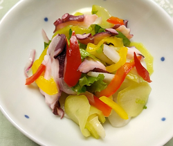

タコのマリネサラダ
- 調理時間： 30分
- （一人当たり）
- カロリー：154kcal
- たんぱく質：10.2g
- 脂質：8.0g
- 炭水化物：9.6g
- 塩分：1.2g


＜2人分＞
- タコ(ゆで)
- 80g
- カブ
- 小2個
- 大根
- 100g
- パプリカ（赤・黄色）
- 各1/6個
- 紫たまねぎ
- 1/6個
- ・りんご酢
- 大さじ3
- ・サラダ油
- 大さじ1
- ・塩
- 小さじ1/4～
- ・コショウ
- 少々
A


- Aの材料を混ぜてマリネ液を作っておく。
塩は味を見ながら足して調整する。 - カブは皮をむいて半分に切って2～3mmの半月切りに。
カブの葉はざく切りにする。
大根は薄切りにする。
カブの根と大根は塩（分量外）をふっておく。
パプリカは細切り、紫玉ねぎは薄切りにして水にさらす。 - タコは食べやすい大きさにぶつ切りにする。
- マリネ液に水気をきったカブ、大根、他の材料を加えてよく和えて完成。
冷蔵庫で寝かせて味をなじませてもおいしい。
タコのマリネサラダ
わが国で食べられている主なタコは、南方にいるマダコと、北方にいるミズダコが主になります。漁獲量は年々減少しており、近年はアフリカやスペインからも大量に輸入されています。タコの栄養成分は、低カロリー・低糖質・高たんぱく質。たんぱく質をしっかり摂りつつ、血糖値の急上昇を抑えることができ、ダイエット中にもおすすめです。リンゴ酢と和えてさっぱり、マリネでいかがでしょうか。